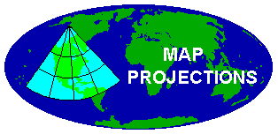

Table of Contents
Introduction
Selected Map Projections
Cylindrical Projections
Cylindrical Equal Area
Behrmann Cylindrical Equal-Area
Gall's Stereographic Cylindrical
Peters
Mercator
Miller Cylindrical
Oblique Mercator
Transverse Mercator
Pseudocylindrical Projections
Mollweide
Eckert Projections
Robinson Projection
Sinusoidal Projection
Conic Projections
Albers Equal Area Conic
Equidistant Conic
Lambert Conformal Conic
Polyconic
Azimuthal Projections
Azimuthal Equidistant
Lambert Azimuthal Equal Area
Orthographic
Stereographic
Miscellaneous Projections
Unprojected Maps
Texas State Wide Projection
Space Oblique Mercator
Links to other related information
Laurie Garo's Introduction to Map Projections
Karen Mulcahy's Map Projection Home Page
Geodetic Datum Overview, Department of Geography, University of Colorado at Boulder
Global Positioning System Overview, Department of Geography, University of Colorado at Boulder
Coordinate Systems Overview, Department of Geography, University of Colorado at Boulder
Home Page, Department of Geography, University of Colorado at Boulder
References
Last Revised 27 March 2000. LNC.